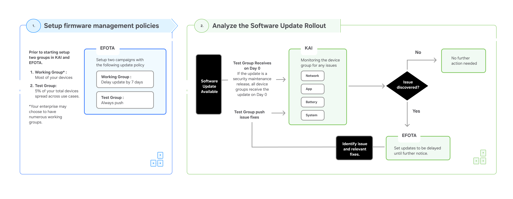

Recommended update cadence for users & enterprises
Last updated March 7th, 2025
Choosing the best update cadence for your enterprise requires alignment with your cybersecurity strategy. It’s important to have a clear understanding of your goals and compliance requirements ahead of deciding the update cadence for your devices.
To effectively manage Samsung mobile devices, it’s important to keep the following objectives in mind:
- Patching as soon as possible is a priority to reduce security risk.
- Maintain a control group and a test group for rolling out device updates (non-security).
- Ensuring device stability after a patch requires a feedback loop.
As described in Security patch vs maintenance patch, there are numerous types of software updates released. Maintenance releases and operating system upgrades can potentially impact dependent software and systems that interface with the device. However, security updates don’t carry this risk and are purely beneficial. It’s important to not delay these types of updates and roll them out as soon as possible.
For handling non-SMR related updates, we encourage our users to leverage Knox Asset Intelligence and Knox E-FOTA.

For OS upgrades and One UI updates, enterprises can enroll in the OS beta program and get a head start on the integration process. This can help you make necessary changes to in-house applications and configurations prior to deploying to a large-scale software update.
When participating in the OS beta program, Knox E-FOTA and Knox Asset Intelligence will not be available for use.
For more information, please contact your Samsung Sales Representative.
Is this page helpful?